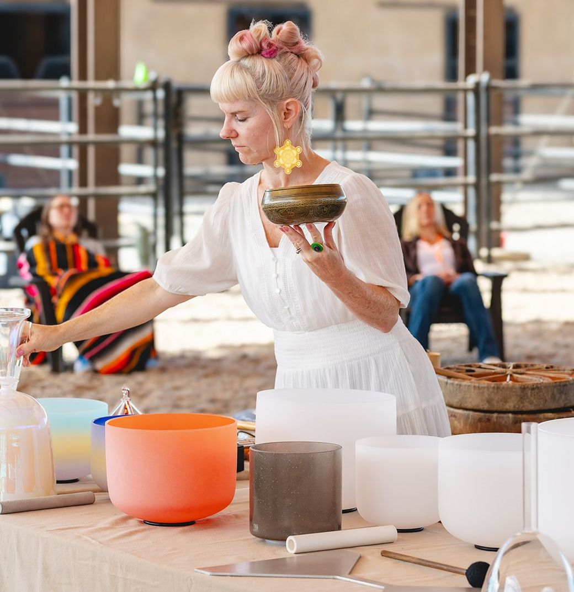
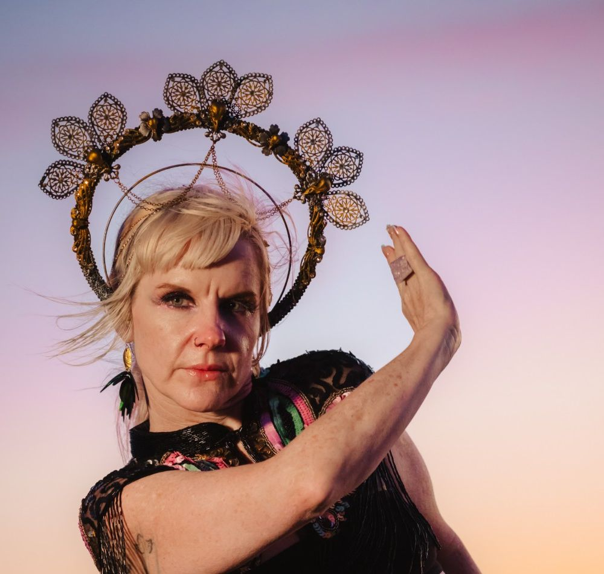

Stage Performance
Her performance work brings together dance, acting, and character-driven movement for live audiences across theatrical and community-centered spaces.
Bay Area Performer · Dancer · Artist · Master Healer
Chris Young-Ginzburg is a multidisciplinary performer whose work brings together hip hop dance, physical theatre, acting, and holistic practice in a voice that is grounded, expressive, and deeply human.
About Chris
Chris Young-Ginzburg, also known as Fluidgirl, is a multidisciplinary movement artist, dancer, performer, and creative facilitator with over 20 years of experience in dance and theatrical expression.
Rooted in the street dance style of popping and freestyle dance, her artistic practice has been enriched through training in mime, clown, and physical theater. Her work explores musicality, character development, shapeshifting, storytelling, and the relationship between imagination and movement.
As the creator of Freestyle Playground and Temple of Expression, Chris is passionate about cultivating spaces for artistic exploration, authentic expression, and creative collaboration. Through teaching, performing, and curating events, she brings together the worlds of dance and theater, celebrating the limitless possibilities of human expression.
Chris is also a sound healer and holistic practitioner, and that dimension informs her artistry. Performance, for her, is not separate from healing; both are ways of listening, transforming, and helping people reconnect with themselves.
Performance Highlights
Her performance work brings together dance, acting, and character-driven movement for live audiences across theatrical and community-centered spaces.
Chris's foundation is Bay Area street dance: Popping, Waacking, House, Footwork, Strutting, and Boogaloo. Her history includes more than six years with the dance collective Medea Sirkas, carrying forward Fillmore traditions of strutting and boogaloo.
Chris also teaches and collaborates across disciplines, sharing hip hop forms with cultural care, clarity, and somatic awareness.
Community Showcase
A family-friendly community performance evening for dance, music, spoken word, theater, and creative expression, hosted by Chris in Sebastopol. A new Temple of Expression event is coming in 2027.
Beyond Performance
Chris's work in sound healing and holistic care lives alongside her work as a performer. If you're looking for her healing practice, offerings, or deeper wellness work, continue to Grove Circle Healing.
Go to Grove Circle Healing
Questions

Chris Young-Ginzburg is a San Francisco Bay Area performer, hip hop dancer, and sound healer. Her work brings together street dance, physical theatre, acting, and holistic practice.
Fluidgirl is the name Chris is known by in the hip hop dance community, where she has spent years developing a performance language rooted in street dance forms and theatrical storytelling.
Chris performs Popping, Waacking, House Dance, Footwork, Strutting, and Boogaloo, and has trained in Physical Theatre, Improv, Clown, and Mime.
Yes. Chris teaches and collaborates across disciplines, sharing hip hop forms with cultural care, clarity, and somatic awareness. For teaching, performances, or collaborations, email Fluidgirlproductions@gmail.com.
Temple of Expression is a family-friendly community talent showcase and ceremonial performance experience hosted by Chris in Sebastopol, California. Performers of all experience levels share short acts of dance, music, spoken word, theater, and more. A new event is coming in 2027; see the Temple of Expression page for details and how to apply to perform.
Chris's sound healing practice is Grove Circle Healing, which offers private sessions, group events, retreats, and corporate wellness. Visit grovecirclehealing.com to learn more and book.
Connect
For performance opportunities, teaching, collaborations, or general inquiries, reach out directly.